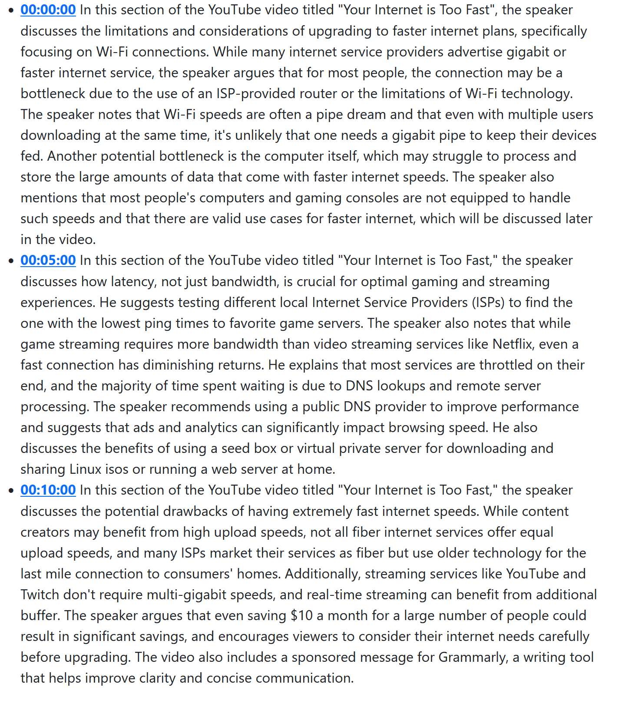

There is a terrible trend on Youtube that has been building for a bit: people just absolutely yapping and informational videos being so much longer than necessary.
One terrible offender of this is Linus Tech Tips. I used to occassional watch his videos, now it seems that
he has to use more clickbait titles and have yappier videos to continue to support his larger team and higher production value.
It is no coincidence that all of his videos are over 10 minutes long.
Long form videos are better monetizable for the creator through more space for ads (both in video and out of video).
Youtube values and thus rewards the higher engagement in the long-form videos.
However, from the perspective of useful information density, Youtube is rewarding adding a ton of fluff to the videos to extend the length.
You would legitimately be able to get 70% of the value of the video in a 1 minute summary second summary, but a creator would never do so, because it would not make them any money.
For example: Your Internet is Too Fast.

The summary is so much better to read from an informational point of view (although it will miss any important charts).
This does seem like a temporary issue, because it seems that ai summarization will get better. The question is though, how will these knowledge aggregators get paid in the future? Also, on the other end, I see this with any short form content - just blatantly wrong information being shown in very short form content (IG reels or YouTube Shorts.) The ones that are too short seem to have a lot of blatant overgeneralizations.
On that note, I would like to write more blog posts.
My desire for perfection and to put out only thoughts that I think no one else has written out before has stopped me from writing more,